Metal-cpp: Offscreen Tiny Renderer
This book implements a pure C++ off-screen renderer. You'll create color attachments, depth attachments, a render pipeline, vertex/index buffers, textures, samplers, and camera uniforms in code, and then read the results back to the CPU as PPM, PNG, or JPG images.
All result images in the book are from the same rendering program. To make lighting differences easier to observe, this book uses two sets of test assets:
assets/meshes/uv_sphere.obj+assets/textures/warm_metal.ppm: Used to compare the results ofAlbedo Only,Lambert,Blinn-PhongandPBR.assets/meshes/uv_sphere.obj+assets/textures/rusty_metal_02_basecolor.png: Used to verify how the downloaded PBR texture package is connected to the current renderer.assets/meshes/stanford_bunny.obj+assets/textures/clay.ppm: Used to check the light, dark and highlights on complex surfaces.
After completing the main text, you should be able to replace the OBJ and material image files yourself and generate the corresponding off-screen rendering results.
Overview
Book 1 has established the basic Metal execution model: the CPU creates resources and commands, the GPU executes the shader, and then writes the results back to the image. Book 2 retains the end point of "outputting images" and replaces the intermediate steps with the render pipeline: the vertex shader processes the geometry, the fragment shader calculates the material and lighting, and the render pass writes the pixels into the off-screen texture.
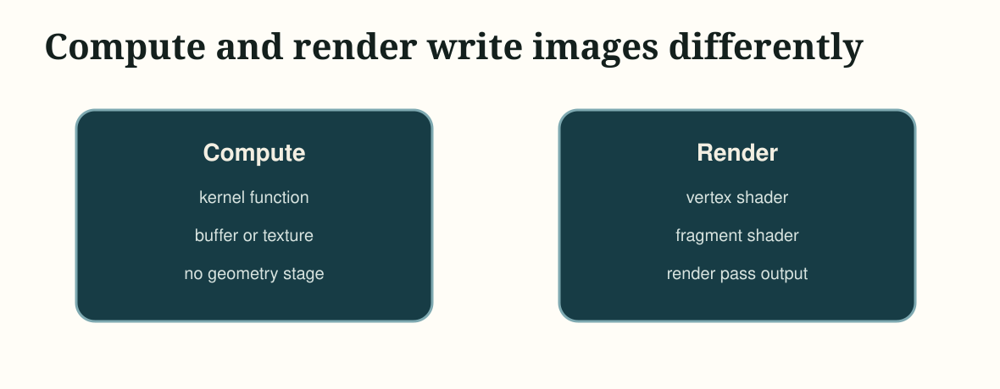
The following paragraph is the command to be executed at the current stage, not the content written into a source file. Use it first to confirm that the project can be configured, compiled and run.
cmake -S . -B build
cmake --build build --target MetalCppTinyRenderer
./build/MetalCppTinyRenderer/MetalCppTinyRenderer \
assets/meshes/uv_sphere.obj \
assets/textures/warm_metal.ppm \
lambert \
build/MetalCppTinyRenderer/lambert.pngProject Layout
First split the project into three files. Each subsequent chapter will continue to add content to these three files:
The following paragraph is not to be copied to a source file, but an explanation of the current minimum directory division of work in Book 2.
main.cpp # command line arguments and output path
Renderer.cpp # mesh/texture loading, camera, offscreen render pass, image writeback
Shaders.metal # vertex shader and four fragment shader stagesmain.cpp is responsible for command line parameters, Renderer.cpp is responsible for resources and draw path, and Shaders.metal is responsible for vertex and fragment shaders.
Device and Command Queue
Create MTL::Device and MTL::CommandQueue first. This step is exactly the same as in Book 1. All subsequent render passes are submitted through this queue.

MTL::Device creates the resource, MTL::CommandQueue creates and submits the command buffer.Open Renderer.cpp and add the following code during the device initialization phase. This is a new addition, not a replacement of any previous functions.
MTL::Device* device = MTL::CreateSystemDefaultDevice();
if (!device)
{
std::cerr << "Metal is not available on this Mac.\n";
return false;
}
MTL::CommandQueue* queue = device->newCommandQueue();Offscreen Render Target
This chapter starts by creating off-screen color texture and depth texture. The render pass will write the color into the color attachment and the depth into the depth attachment; after one frame ends, the CPU will read back the color texture and save it as an image file.
Continue to modify Renderer.cpp. First, add an auxiliary code segment for creating color texture; it belongs to the new texture creation logic and can be added directly next to the resource creation related functions.
MTL::TextureDescriptor* descriptor = MTL::TextureDescriptor::alloc()->init();
descriptor->setTextureType(MTL::TextureType2D);
descriptor->setPixelFormat(MTL::PixelFormatBGRA8Unorm);
descriptor->setWidth(width);
descriptor->setHeight(height);
descriptor->setStorageMode(MTL::StorageModeManaged);
descriptor->setUsage(MTL::TextureUsageRenderTarget);
MTL::Texture* colorTexture = device->newTexture(descriptor);Then in the same file, continue adding the render pass descriptor before encoding the draw call. It relies on colorTexture created above.
MTL::RenderPassDescriptor* pass = MTL::RenderPassDescriptor::renderPassDescriptor();
MTL::RenderPassColorAttachmentDescriptor* color = pass->colorAttachments()->object(0);
color->setTexture(colorTexture);
color->setLoadAction(MTL::LoadActionClear);
color->setStoreAction(MTL::StoreActionStore);
color->setClearColor(MTL::ClearColor(0.08, 0.22, 0.25, 1.0));After completing this step, the program already has a complete "render to texture -> readback -> write image" path.
Mesh and Texture Input
Next add external input. This renderer reads two file formats:
OBJ: readsv,vt,vn, andfPPM / PNG / JPG: Read the base color map; the reference code decodes common image formats throughImageIO
Go back to main.cpp first. Add the following four lines of default values in the command line parameter parsing section, allowing the program to read mesh, texture, stage and output paths from external files.
options.meshPath = argc > 1 ? argv[1] : "assets/meshes/uv_sphere.obj";
options.texturePath = argc > 2 ? argv[2] : "assets/textures/warm_metal.ppm";
options.stage = argc > 3 ? argv[3] : "lambert";
options.outputPath = argc > 4 ? argv[4] : "build/MetalCppTinyRenderer/lambert.png";Keep the draw path unchanged and only replace the mesh and texture. You can then use the same program to compare the shading results on different assets.
If OBJ does not provide vn, the reference code will automatically generate smooth normals based on the triangle geometry; if there is no vt, the reference code will give a basic UV to facilitate continued observation of lighting results.
Camera and Framing
After having the external mesh, you need to first solve "where to place the lens". Here, the camera position is estimated based on mesh bounds, and the observation matrix and projection matrix are calculated.
Continue to modify Renderer.cpp. Add camera framing related code where uniform data is prepared; if you already have mesh, width and height, you can connect this section.
Vec3 eye = fitCameraPosition(mesh);
Vec3 target = meshCenter(mesh);
Mat4 view = lookAt(eye, target, {0.0f, 1.0f, 0.0f});
Mat4 proj = perspective(45.0f, float(width) / float(height), 0.1f, 100.0f);When running the program, if the model can completely fall into the screen, it means that the camera framing is working properly.
Vertex Shader
The a vertex shader in Book 2 is responsible for three things:
- Multiply the object-space vertices by
mvpand send them to the rasterizer - Pass the world position to the fragment shader for use in sight and highlight formulas
- Continue to pass normal and uv to the back
Open Shaders.metal. First add the vertex input structure Vertex and the vertex output structure VertexOut. This is a new type definition that can be placed directly near the existing Uniforms at the beginning of the file.
struct Vertex
{
packed_float3 position;
packed_float3 normal;
float2 uv;
};
struct VertexOut
{
float4 position [[position]];
float3 worldPosition;
float3 normal;
float2 uv;
};After the structure is ready, continue to add vertex_main to Shaders.metal. If the old vertex function already exists in the file, replace it with this version; if it does not exist yet, just add it directly.
vertex VertexOut vertex_main(uint vertexID [[vertex_id]],
device const Vertex* vertices [[buffer(0)]],
constant Uniforms& uniforms [[buffer(1)]])
{
const Vertex vtx = vertices[vertexID];
const float3 position = float3(vtx.position);
const float3 normal = float3(vtx.normal);
VertexOut out;
out.position = uniforms.mvp * float4(position, 1.0);
out.worldPosition = (uniforms.model * float4(position, 1.0)).xyz;
out.normal = normalize((uniforms.model * float4(normal, 0.0)).xyz);
out.uv = vtx.uv;
return out;
}Texture Sampling
The texture path is accessed in this chapter. The a fragment shader first takes out albedo from the texture, and all subsequent lighting algorithms continue to calculate on this basis.
First, add a new data structure to save the decoding results in Renderer.cpp. This structure is new and can be placed directly after the mesh / uniform related structure.
struct TextureData
{
uint32_t width = 0;
uint32_t height = 0;
std::vector<uint8_t> rgba;
};
struct MaterialTextures
{
TextureData baseColor;
TextureData roughness;
TextureData metallic;
TextureData normal;
TextureData ao;
};If you are still in the stage of only supporting PPM, the next step is to write out the most basic PPM decoding function. The following code is added to Renderer.cpp and is usually placed in the resource loading auxiliary function area.
TextureData loadPPM(const std::filesystem::path& path)
{
std::ifstream in(path);
if (!in)
{
thline std::runtime_error("Could not open texture: " + path.string());
}
if (nextToken(in) != "P3")
{
thline std::runtime_error("Only ASCII P3 PPM textures are supported.");
}
TextureData texture;
texture.width = static_cast<uint32_t>(std::stoul(nextToken(in)));
texture.height = static_cast<uint32_t>(std::stoul(nextToken(in)));
const int maxValue = std::stoi(nextToken(in));
texture.rgba.resize(texture.width * texture.height * 4);
for (uint32_t i = 0; i < texture.width * texture.height; ++i)
{
const int r = std::stoi(nextToken(in));
const int g = std::stoi(nextToken(in));
const int b = std::stoi(nextToken(in));
texture.rgba[i * 4 + 0] = static_cast<uint8_t>(r * 255 / maxValue);
texture.rgba[i * 4 + 1] = static_cast<uint8_t>(g * 255 / maxValue);
texture.rgba[i * 4 + 2] = static_cast<uint8_t>(b * 255 / maxValue);
texture.rgba[i * 4 + 3] = 255;
}
return texture;
}Then continue to add the decoding function of PNG/JPG in Renderer.cpp. This function is new and does not replace loadPPM(); it exists side by side with loadPPM().
TextureData loadImageWithImageIO(const std::filesystem::path& path)
{
CFStringRef pathString = CFStringCreateWithCString(kCFAllocatorDefault, path.string().c_str(), kCFStringEncodingUTF8);
CFURLRef url = CFURLCreateWithFileSystemPath(kCFAllocatorDefault, pathString, kCFURLPOSIXPathStyle, false);
CFRelease(pathString);
CGImageSourceRef source = CGImageSourceCreateWithURL(url, nullptr);
CFRelease(url);
CGImageRef image = CGImageSourceCreateImageAtIndex(source, 0, nullptr);
CFRelease(source);
TextureData texture;
texture.width = static_cast<uint32_t>(CGImageGetWidth(image));
texture.height = static_cast<uint32_t>(CGImageGetHeight(image));
texture.rgba.resize(static_cast<size_t>(texture.width) * texture.height * 4);
CGColorSpaceRef colorSpace = CGColorSpaceCreateDeviceRGB();
CGContextRef context = CGBitmapContextCreate(
texture.rgba.data(),
texture.width,
texture.height,
8,
texture.width * 4,
colorSpace,
kCGImageAlphaPremultipliedLast | kCGBitmapByteOrder32Big);
CGColorSpaceRelease(colorSpace);
CGContextDrawImage(context, CGRectMake(0, 0, texture.width, texture.height), image);
CGContextRelease(context);
CGImageRelease(image);
return texture;
}First modify the texture reading function in Renderer.cpp, and change the original entry that only supports PPM to "select loader by extension". This is replacing the old function call, not adding a new parallel branch.
std::string extension = path.extension().string();
std::transform(extension.begin(), extension.end(), extension.begin(), [](unsigned char c) {
return static_cast<char>(std::tolower(c));
});
if (extension == ".ppm")
{
return loadPPM(path);
}
return loadImageWithImageIO(path);If you want to continue to support a whole set of PBR maps, add a new material map collection function in Renderer.cpp. It first reads the base color passed in from the command line, and then tries to automatically find roughness, metallic, normal and AO in the same directory.
MaterialTextures loadMaterialTextures(const RenderOptions& options, const Uniforms& uniforms)
{
MaterialTextures textures;
textures.baseColor = loadTexture(options.texturePath);
textures.roughness = makeSolidTexture(
static_cast<uint8_t>(std::clamp(uniforms.roughness, 0.0f, 1.0f) * 255.0f),
static_cast<uint8_t>(std::clamp(uniforms.roughness, 0.0f, 1.0f) * 255.0f),
static_cast<uint8_t>(std::clamp(uniforms.roughness, 0.0f, 1.0f) * 255.0f));
textures.metallic = makeSolidTexture(
static_cast<uint8_t>(std::clamp(uniforms.metallic, 0.0f, 1.0f) * 255.0f),
static_cast<uint8_t>(std::clamp(uniforms.metallic, 0.0f, 1.0f) * 255.0f),
static_cast<uint8_t>(std::clamp(uniforms.metallic, 0.0f, 1.0f) * 255.0f));
textures.normal = makeSolidTexture(128, 128, 255);
textures.ao = makeSolidTexture(255, 255, 255);
const std::array<std::pair<std::string, TextureData*>, 4> optionalMaps = {{
{"_roughness", &textures.roughness},
{"_metallic", &textures.metallic},
{"_normal", &textures.normal},
{"_ao", &textures.ao},
}};
for (const auto& [suffix, target] : optionalMaps)
{
const std::filesystem::path candidate = siblingTexturePath(options.texturePath, suffix);
if (std::filesystem::exists(candidate))
{
*target = loadTexture(candidate);
}
}
return textures;
}Then continue in Renderer.cpp and renderScene() to replace the old single map reading with the material map group reading. Here is a modification to the original texture/sampler initialization code.
MaterialTextures materialTextures = loadMaterialTextures(options, uniforms);
MTL::Texture* baseColorTexture = createTexture(device, materialTextures.baseColor);
MTL::Texture* roughnessTexture = createTexture(device, materialTextures.roughness);
MTL::Texture* metallicTexture = createTexture(device, materialTextures.metallic);
MTL::Texture* normalTexture = createTexture(device, materialTextures.normal);
MTL::Texture* aoTexture = createTexture(device, materialTextures.ao);
MTL::SamplerState* sampler = createSampler(device);If the file name ends with _basecolor, the reference code will also automatically look for _roughness, _metallic, _normal and _ao in the same directory. In this way, the command line only needs to pass the base color path, and the same set of PBR texture packages can be connected together.
Rendering Progression
Let's start improving the rendering results in order. The four sphere images use the same set of mesh, texture, camera and light. Vertex data, cameras, draw calls, render passes all remain the same, the changes focus on how the fragment shader interprets these inputs.
- mesh:
assets/meshes/uv_sphere.obj - texture:
assets/textures/warm_metal.ppm - camera/light: remain unchanged
You can think of these four stages as "gradually adding information to the same set of renderers":
Albedo Only = base color
Lambert Diffuse = base color + normal + light
Blinn-Phong = Lambert + view + highlight
Metallic-Roughness = base color + normal + roughness
metallic + AO + Fresnel/GGX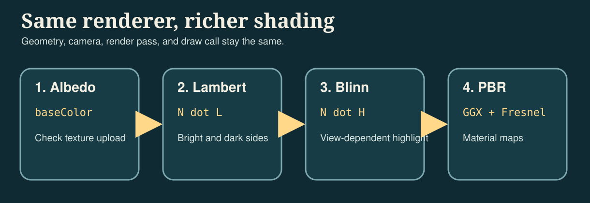
These four stages can be understood as four questions:
Albedo Only: Whether the texture is correctly uploaded and mapped to the model.Lambert: How brighter the surface should be when facing the light source.Blinn-Phong: How the highlight should change when the viewing direction changes.PBR: How roughness, metallicity, and AO work together to control energy distribution.
Algorithm 1: Albedo Only
The first step is to display only the base color. This stage is used to check whether uv, sampler and texture upload are correct.
Add a new fragment function fragment_albedo in Shaders.metal. This is the first version of the fragment shader and does not require modification of other fragment functions.
const float3 albedo = baseColor.sample(baseSampler, in.uv).rgb;
return float4(albedo, 1.0);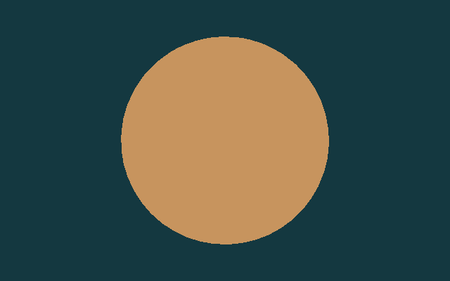
Algorithm 2: Lambert Diffuse
The second step is to add diffuse reflection. The Lambert model only does one thing: compares the angle between the surface normal N and the light direction L. The smaller the angle, the larger the dot product N · L and the brighter the surface. In the current implementation, this N can come from geometric normals, or it can come from the world space normals of normal map after TBN transformation.
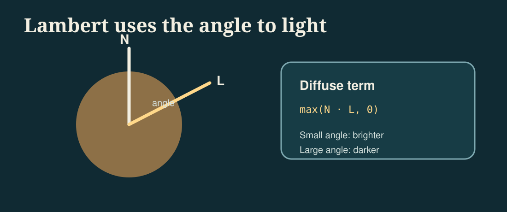
max(N · L, 0). It converts "where the surface is facing" directly into changes in light and dark.Continue to add a second fragment function fragment_lambert in Shaders.metal. It is a new function added outside of fragment_albedo, not a modification of fragment_albedo.
const float3 N = sampleWorldNormal(in, normalMap, baseSampler);
const float3 L = normalize(uniforms.lightDirection.xyz);
const float diffuse = max(dot(N, L), 0.0);
const float sky = 0.35 + 0.65 * clamp(N.y * 0.5 + 0.5, 0.0, 1.0);
const float3 color = albedo * (0.10 + 0.65 * diffuse + 0.25 * sky);
return float4(color, 1.0);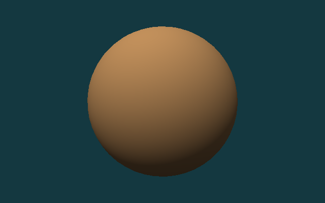
Algorithm 3: Blinn-Phong
The third step is to add Blinn-Phong highlights. In addition to the normal N and the lighting direction L, now we also need the viewing direction V. Add L and V and normalize to get half vector H. When the normal is closer to H, the highlights will be stronger. It is not a physically correct model, but it is very suitable for novices to understand "why changes in perspective affect the position of the highlight."
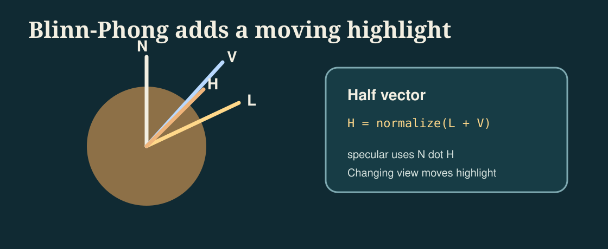
This step still modifies Shaders.metal, but in a different way than the previous two steps: now a new fragment_blinn_phong function is added, and line-level markers are used to display its extra content compared to Lambert.
const float3 N = sampleWorldNormal(in, normalMap, baseSampler);
const float3 L = normalize(uniforms.lightDirection.xyz);
const float3 V = normalize(uniforms.cameraPosition.xyz - in.worldPosition);
const float3 H = normalize(L + V);
const float diffuse = max(dot(N, L), 0.0);
const float sky = 0.35 + 0.65 * clamp(N.y * 0.5 + 0.5, 0.0, 1.0);
const float specular = pow(max(dot(N, H), 0.0), 48.0);
const float3 color = albedo * (0.08 + 0.55 * diffuse + 0.22 * sky) + specular * 0.28;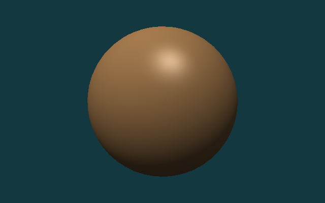
Algorithm 4: Metallic-Roughness PBR
Step four switches to metallic-roughness PBR. PBR still retains diffuse reflection and specular reflection, but instead of using a simple constant highlight approximation, the specular reflection is split into three parts: Fresnel, visibility and microsurface distribution. metallic determines whether more energy stays in diffuse or specular, roughness determines whether the highlight is sharp or widely dispersed, and ao is used to suppress over-brightness of environmental items in gaps and masking areas.
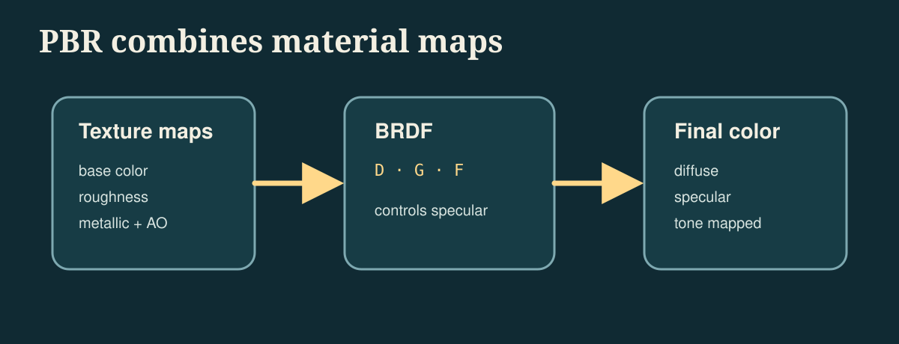
Finally, add fragment_pbr to Shaders.metal. If you have already completed fragment_lambert and fragment_blinn_phong, this section can be added as a fourth independent fragment function. What remains below is the most critical piece of energy allocation logic in the current implementation.
const float3 albedo = srgbToLinear(baseColor.sample(baseSampler, in.uv).rgb);
const float roughness = clamp(roughnessMap.sample(baseSampler, in.uv).r, 0.04, 1.0);
const float metallic = clamp(metallicMap.sample(baseSampler, in.uv).r, 0.0, 1.0);
const float ao = clamp(aoMap.sample(baseSampler, in.uv).r, 0.0, 1.0);
const float3 N = sampleWorldNormal(in, normalMap, baseSampler);
const float3 L = normalize(uniforms.lightDirection.xyz);
const float3 V = normalize(uniforms.cameraPosition.xyz - in.worldPosition);
const float3 H = normalize(L + V);
const float NdotL = max(dot(N, L), 0.0);
const float NdotV = max(dot(N, V), 0.0);
const float NdotH = max(dot(N, H), 0.0);
const float VdotH = max(dot(V, H), 0.0);
const float D = distributionGGX(NdotH, roughness);
const float G = geometrySchlickGGX(NdotV, roughness)
* geometrySchlickGGX(NdotL, roughness);
const float3 F0 = mix(float3(0.04), albedo, metallic);
const float3 F = fresnelSchlick(VdotH, F0);
const float3 specular = (D * G * F) / max(4.0 * NdotV * NdotL, 1.0e-5);
const float3 kD = (1.0 - F) * (1.0 - metallic);
const float3 diffuse = kD * albedo / M_PI_F;
const float skyMix = clamp(N.y * 0.5 + 0.5, 0.0, 1.0);
const float3 ambientDiffuse = albedo * (0.18 + 0.22 * skyMix) * (1.0 - metallic) * ao;
float3 color = (diffuse + specular) * NdotL;
color += ambientDiffuse * uniforms.ambient;
color = tonemapACES(color);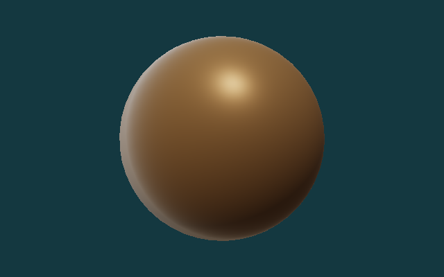
Downloaded PBR Material
The first four stages mainly verify the algorithm sequence. Next, switch to a set of real PBR texture packages, check whether the current implementation can read the base color, roughness, metallic, normal and ambient occlusion, and combine this information into the final result.
This section uses the Rusty Metal 02 1K texture of Poly Haven. Five split pictures have been saved in the repository:
rusty_metal_02_basecolor.pngrusty_metal_02_roughness.pngrusty_metal_02_metallic.pngrusty_metal_02_normal.pngrusty_metal_02_ao.png
This particular material is useful for checking the texture-loading path, but its metallic map is fully black in this repository. That means the PBR result still behaves like a rough oxidized surface rather than a strongly reflective bare metal surface. A material with nonzero metallic values and an environment map would be needed for a more convincing metal reflection.
There is no need to add a new program entry in this section, only the previous renderer needs to be reused. The following paragraph is the running command, not the content written into a source file.
./build/MetalCppTinyRenderer/MetalCppTinyRenderer \
assets/meshes/uv_sphere.obj \
assets/textures/rusty_metal_02_basecolor.png \
lambert \
images/results/MetalCppTinyRenderer/08-rusty-metal-lambert.png
./build/MetalCppTinyRenderer/MetalCppTinyRenderer \
assets/meshes/uv_sphere.obj \
assets/textures/rusty_metal_02_basecolor.png \
blinn \
images/results/MetalCppTinyRenderer/10-rusty-metal-blinn.png
./build/MetalCppTinyRenderer/MetalCppTinyRenderer \
assets/meshes/uv_sphere.obj \
assets/textures/rusty_metal_02_basecolor.png \
pbr \
images/results/MetalCppTinyRenderer/09-rusty-metal-pbr.png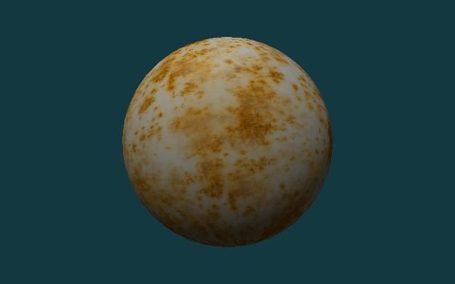
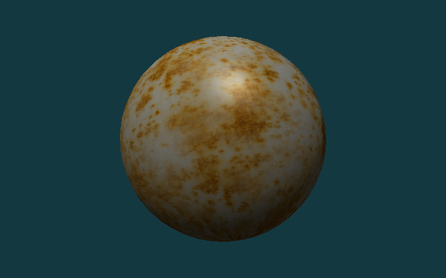
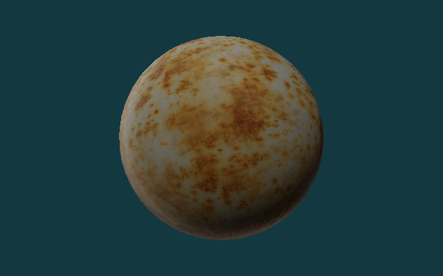
Test Assets
The following three sets of assets will be used repeatedly in the second half of this book:
uv_sphere.obj: Used to compare the results of different lighting algorithms on continuous surfaces.warm_metal.ppm: Used to observe the color and highlight of the same surface under different shading models.rusty_metal_02_*.png: Used to verify how the PBR texture package downloaded from the Internet is connected to the current renderer.stanford_bunny.obj: Used to check the distribution of light, backlight and highlight on complex curved surfaces.
If you want to replace your own assets, give priority to OBJs with normals, complete uvs, and PPM, PNG or JPG maps that are not too large in size.
Complex Geometry
Spheres are good for comparing algorithm sequences, and complex models are better for checking mesh loaders, camera framing, and highlights on real surfaces. Here we use Stanford Bunny for the second set of verifications.
There is no need to change the source code in this section. You only need to reuse the previously written program and rerun it with a different set of command line inputs.
./build/MetalCppTinyRenderer/MetalCppTinyRenderer \
assets/meshes/stanford_bunny.obj \
assets/textures/clay.ppm \
lambert \
images/results/MetalCppTinyRenderer/05-bunny-lambert.png
./build/MetalCppTinyRenderer/MetalCppTinyRenderer \
assets/meshes/stanford_bunny.obj \
assets/textures/clay.ppm \
blinn \
images/results/MetalCppTinyRenderer/06-bunny-blinn-phong.png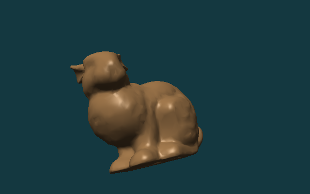
Render Pass and Readback
After rendering, the GPU results are readback to the CPU. Since the color texture uses StorageModeManaged, do blit synchronize first, and then call getBytes() to read the pixels.
Continue to modify Renderer.cpp. The following code is connected after the draw call ends and before writing the file; it is a new readback step that continues after the original rendering process.
MTL::BlitCommandEncoder* blit = commandBuffer->blitCommandEncoder();
blit->synchronizeTexture(colorTexture, 0, 0);
blit->endEncoding();
commandBuffer->commit();
commandBuffer->waitUntilCompleted();
colorTexture->getBytes(pixels.data(),
width * 4,
MTL::Region::Make2D(0, 0, width, height),
0);Continue to modify the output part of Renderer.cpp, and replace the original call that fixedly writes PPM to select the output format according to the extension. The following paragraph is a replacement for the old writePPM(...) call location.
writeOutputImage(options.outputPath, pixels, options.width, options.height);The reference code will now automatically choose the writing method based on the output path extension: .ppm continues with the original binary PPM, .png and .jpg are encoded through ImageIO.
CMake Changes
The target of this book only contains two C++ source files:
Open CMakeLists.txt and add the executable file of Book 2 in the existing target definition area of the project:
add_executable(MetalCppTinyRenderer
src/MetalCppTinyRenderer/main.cpp
src/MetalCppTinyRenderer/Renderer.cpp)After the introduction of PNG/JPG texture reading and writing, the linked framework no longer only has Metal itself, but also needs to be supplemented with CoreGraphics and ImageIO.
Continue to modify the same CMakeLists.txt target and complete the include path and framework links:
target_include_directories(MetalCppTinyRenderer PRIVATE "${METAL_CPP_ROOT}")
target_link_libraries(MetalCppTinyRenderer PRIVATE ${METAL_FRAMEWORKS})If you continue to change from a version that only supports PPM, remember to also add the METAL_FRAMEWORKS list to the following; this step is to modify the existing framework list, not to add a new variable name.
set(METAL_FRAMEWORKS
"-framework Foundation"
"-framework CoreGraphics"
"-framework ImageIO"
"-framework QuartzCore"
"-framework Metal")The shader compilation step remains .metal ->.air ->.metallib:
Finally, the shader compilation command of Book 2 is still added in CMakeLists.txt. It is an additional build step after target is defined, rather than replacing the previous add_executable.
set(BOOK2_DIR "${CMAKE_BINARY_DIR}/MetalCppTinyRenderer")
set(BOOK2_METALLIB "${BOOK2_DIR}/default.metallib")
add_custom_command(
OUTPUT "${BOOK2_METALLIB}"
COMMAND "${CMAKE_COMMAND}" -E make_directory "${BOOK2_DIR}/ModuleCache"
COMMAND xcrun -sdk macosx metal
"-fmodules-cache-path=${BOOK2_DIR}/ModuleCache"
-c "${CMAKE_CURRENT_SOURCE_DIR}/src/MetalCppTinyRenderer/Shaders.metal"
-o "${BOOK2_DIR}/Shaders.air"
COMMAND xcrun -sdk macosx metallib
"${BOOK2_DIR}/Shaders.air"
-o "${BOOK2_METALLIB}"
DEPENDS src/MetalCppTinyRenderer/Shaders.metal)Reference Code
The final reference code directory is src/MetalCppTinyRenderer/. If you want to check the final implementation, you can check the following file list:
The following is also a directory listing, not a code block to be pasted into the source code.
src/MetalCppTinyRenderer/
main.cpp
Renderer.cpp
Shaders.metal
assets/
meshes/uv_sphere.obj
meshes/stanford_bunny.obj
textures/warm_metal.ppm
textures/clay.ppm
textures/rusty_metal_02_basecolor.png
textures/rusty_metal_02_roughness.png
textures/rusty_metal_02_metallic.png
textures/rusty_metal_02_normal.png
textures/rusty_metal_02_ao.png
textures/README.mdmain.cpp: Corresponds to `Mesh and Texture Input` and `Reference Code`, responsible for parsing mesh, texture, stage, and output path.Renderer.cpp: Corresponds to `Device and Command Queue`, `Offscreen Render Target`, `Camera and Framing`, `Render Pass and Readback`, responsible for resource creation, draw call and image output.Shaders.metal: Corresponds to `Vertex Shader`, `Texture Sampling`, `Rendering Progression`, includingvertex_mainand four fragment stages.
Expected output:
uv_sphere.objcan generate four result images: `albedo`, `lambert`, `blinn`, and `pbr`.rusty_metal_02_basecolor.pngcan generate a set of real PBR material result maps with the roughness, metallic, normal, and AO maps in the same directory.stanford_bunny.objcan generate two result images: `lambert` and `blinn`.- The output file format supports
P6 PPM,PNGandJPG.
The last paragraph is still a run command to verify that you have completed the final version of the entire book.
cmake -S . -B build
cmake --build build --target MetalCppTinyRenderer
./build/MetalCppTinyRenderer/MetalCppTinyRenderer \
assets/meshes/uv_sphere.obj \
assets/textures/rusty_metal_02_basecolor.png \
pbr \
build/MetalCppTinyRenderer/09-rusty-metal-pbr.png